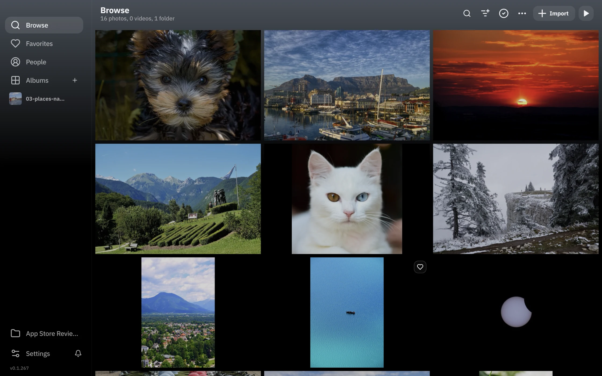
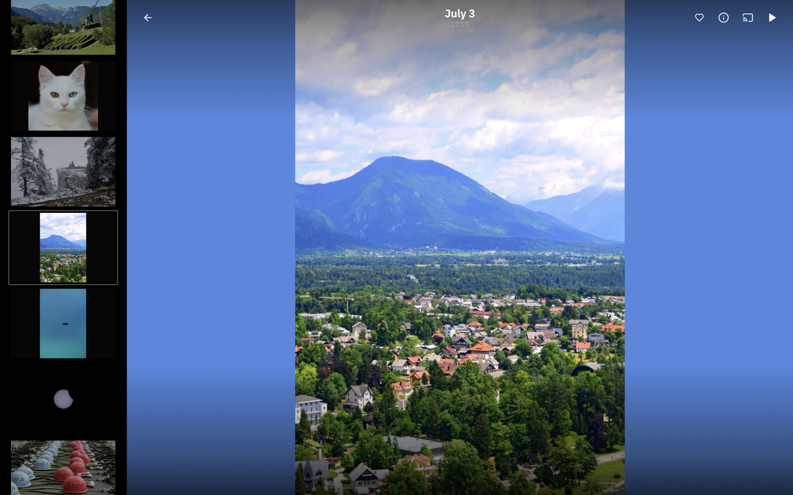

Your library.
Rediscovered.
A home for your photos and videos on Mac.
Browse, organize, and enjoy the moments you keep.

All your moments
Browse photos and videos from the folders you choose, together in one visual library.
Albums, your way
Bring a trip or a story together in an album. Mark your favorites to find them again.
Familiar faces
Turn on People recognition to group photos by the people in them. Processing stays on your Mac.
A little less scrolling.
A little more looking.
Open a photo with room to enjoy it. Move through your library with the filmstrip, or press play for a slideshow.

Your Mac. Your library.
Your library is processed locally. No Picberry account or Picberry cloud upload is required.